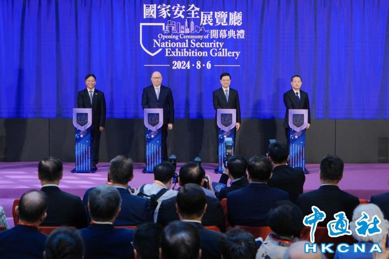

综合香港电台网站、中通社等港媒报导，「香港特别行政区国家安全展览厅」6日举行开幕礼，香港行政长官李家超致词表示，今日香港告别动荡不安的局面，但国际形势复杂，国家安全风险不容忽视，必须增强忧患意识。香港保安局局长邓炳强称，预计一年会有超过10万人到展览厅参观。
据了解，香港特别行政区国家安全展览厅是香港首个系统介绍国家安全的专厅，目的推动香港市民认识国家安全的积极意义，及提高市民对国家安全的责任感和主人翁意识。展览厅将于8月7日起对公众开放。
李家超说，今年是大陆国家主席习近平，提出总体国家安全观十周年，亦是特区完成基本法23条本地立法的宪制责任，具有里程碑意义的一年。
李家超称，为有效应对国安风险，必须全面贯彻总体国家安全观，坚持发展与安全并重的谋划，实现高质量和高水平安全的良性交互，维护国家安全，面对消息万变的国际局势，必须增强忧患意识。
至于展厅经费来源，邓炳强称，费用方面是根据国家安全法，从政府收入拨备作为国安相关工作，细项方面不便透露。
中联办主任郑雁雄指出，该展厅是特区在总体国家安全观提出10周年之际的一个落实行动，也是特区方便市民了解国家安全、增强国安意识而创建的一个园地
邓炳强透露，展厅中有两个展品：一是由中国国家博物馆所送赠的油画，另一是太空船在月球收集到的土壤样本，都是非常珍贵。